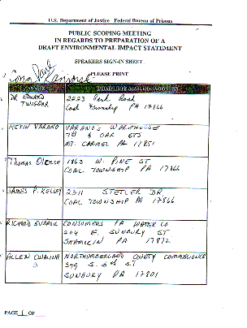
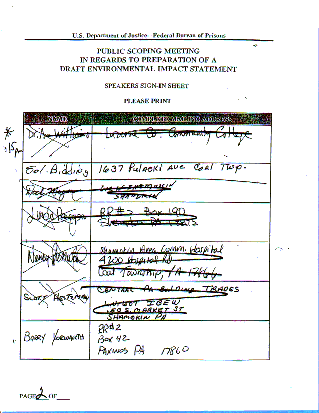

The is a sample of the signin sheet from the BOP Scoping Meeting held May 31, 2000 in which individuals' names were forged to provide an impression that the majority of speakers were in favor of the prison.

